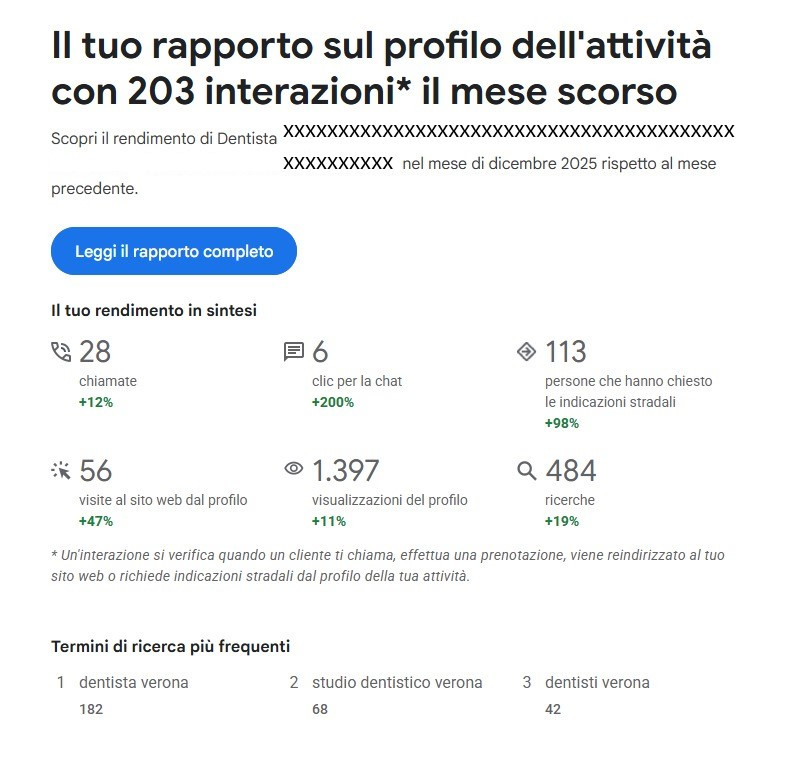

Google Maps e Profilo dell’Attività: Come Trasformare le Ricerche Locali in Nuovi Clienti (Case Study)

Nel panorama digitale odierno, non basta "esserci". Per un'attività locale – che si tratti di un singolo negozio o di una catena di punti vendita – la visibilità su Google Maps è il vero motore della crescita. Ma come si passa da una semplice bandierina sulla mappa a un flusso costante di appuntamenti e vendite?
In questo articolo esploreremo l’importanza di Google Maps e del Profilo dell’Attività (ex Google My Business) e, dati alla mano, vi mostreremo come una gestione professionale possa cambiare radicalmente le sorti della vostra presenza online.
Cos'è Google Maps e il Profilo dell’Attività su Google?
Google Maps è molto più di un navigatore: è il motore di ricerca locale più utilizzato al mondo. Quando un utente cerca "dentista vicino a me" o "miglior negozio di arredamento", Google mostra i risultati basandosi sulla pertinenza e sulla vicinanza.
Il Profilo dell’Attività su Google è la "carta d’identità" digitale della tua azienda. È qui che i clienti trovano i tuoi orari, le foto, le recensioni e, soprattutto, i pulsanti per interagire con te. Gestire correttamente questo profilo non significa solo inserire i dati corretti, ma ottimizzarli costantemente per battere la concorrenza.
Dall'Interesse alla Conversione: L'Analisi del Nostro Successo
Vogliamo condividere con voi i risultati ottenuti da uno dei nostri ultimi casi studio (un prestigioso studio dentistico a Verona), analizzando i dati tra dicembre 2025 e gennaio 2026. Questi numeri dimostrano come un'attività possa evolvere da "curiosità" a "scelta consapevole".

Fase 1: Creare Autorità e Visibilità (Dicembre 2025)
Nel primo mese di gestione mirata, abbiamo registrato un'impennata incredibile nell'interazione diretta:
- +98% di richieste di indicazioni stradali (113 persone hanno deciso di venire fisicamente in studio).
- +47% di visite al sito web dal profilo Google.
- +12% di telefonate dirette tramite il tasto "Chiama".
In questa fase, l'obiettivo primario era farsi conoscere e portare fisicamente le persone "alla porta" del cliente.
Fase 2: Qualificare il Traffico e Fidelizzare (Gennaio 2026)
Nel secondo mese, la strategia si è affinata. Abbiamo notato un cambio di comportamento degli utenti estremamente positivo, passando dalla ricerca di informazioni alla conversione diretta:
Telefonate in ulteriore crescita (+10%): 31 contatti diretti.
Clic per la chat WhatsApp volati a +50%: segno di una comunicazione più immediata.
Visite al sito web cresciute ancora (+41%): 79 visite mirate.
Nota analitica: Nonostante le indicazioni stradali siano diminuite del 38%, i contatti diretti (chiamate e chat) sono aumentati. Questo indica che il traffico è diventato più qualificato: le persone non hanno più bisogno di "vedere dove sei", ma sono pronte a prenotare un appuntamento.

La Forza del Brand: Non solo "Cosa", ma "Chi"
Uno degli aspetti più gratificanti della nostra gestione è l'analisi delle parole chiave più ricercate. Inizialmente, il volume di ricerca era dominato da termini generici:
- dentista verona (190 ricerche)
- studio dentistico verona (54 ricerche)
Con il consolidamento della presenza online, è apparsa con forza la ricerca per Brand Name (Nome dell'attività).
Il segnale SEO più forte: Quando gli utenti iniziano a cercarti per nome, significa che il tuo marchio è diventato un punto di riferimento autorevole sul territorio. Non sei più "un dentista", sei "LO studio".
Perché Affidarsi a degli Esperti per la Gestione Maps?
Gestire un profilo Google Maps non significa solo pubblicare un post ogni tanto. Richiede analisi dei dati, ottimizzazione SEO locale, gestione della reputazione e capacità di leggere i trend. Se possiedi un negozio o gestisci una catena di punti vendita, considera questi vantaggi:
- Ottimizzazione costante delle parole chiave per scalare le posizioni.
- Analisi del comportamento utente per convertire le visualizzazioni in vendite.
- Monitoraggio delle performance con report trasparenti come quelli mostrati sopra.
Passare dalle semplici "visualizzazioni" alle "prenotazioni" è un processo tecnico e strategico. Noi abbiamo le competenze e i dati per dimostrare che funziona.
Vuoi che la tua attività sia la prima scelta su Google Maps? Contattaci oggi stesso per una consulenza e trasforma la tua presenza locale nella tua risorsa di marketing più potente.